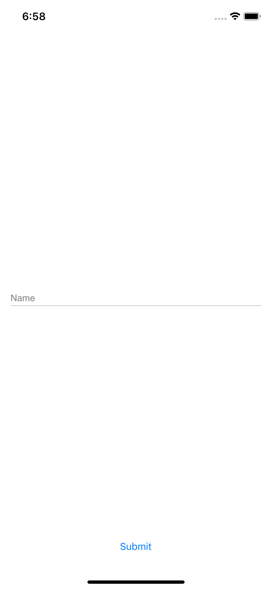

В этом уроке будет сделано небольшое приложение полностью из общего кода, используя moko-widgets.
Для работы потребуется:
- Android Studio 3.4.0+;
- Xcode 10.3+;
- Xcode Command Line Tools (
xcode-select --install);
Для начала создадим новый проект на основе шаблона moko-widgets-template. Для этого на странице шаблона нужно нажать "Use this template", ввести данные своего нового репозитория (например можно назвать moko-widgets-education).
Далее нужно склонировать проект себе локально.
Далее убедимся что проект корректно компилируется.
- Android - открываем Android Studio и после завершения gradle sync запускаем приложение (Run);
- iOS - вызываем
pod installв дирректорииios-app, а после завершения открываемios-app.xcworkspaceи жмем Run.
При запуске приложения мы должны увидеть надпись Hello world по центру экрана.
|
|


Common
mpp-library/src/commonMain/kotlin/org/example/mpp/App.kt:
class App : BaseApplication() {
override fun setup(): ScreenDesc<Args.Empty> {
val theme = Theme()
return registerScreen(MainScreen::class) {
MainScreen(theme)
}
}
}
Главный класс приложения - App, находится в общем коде и является точкой инициализации приложения на обеих платформах. В методе setup должна производиться регистрация всех экранов приложения (метод registerScreen) и в результате выполнения метода должен быть возвращен стартовый экран (с которого будет запускаться приложение). Тип Args.Empty означает, что стартовый экран должен быть без входящих данных (для его открытия ничего передавать не надо).
mpp-library/src/commonMain/kotlin/org/example/mpp/MainScreen.kt:
class MainScreen(
private val theme: Theme
) : WidgetScreen<Args.Empty>() {
override fun createContentWidget() = with(theme) {
container(size = WidgetSize.AsParent) {
center {
text(
size = WidgetSize.WrapContent,
text = const(MR.strings.hello_world.desc() as StringDesc)
)
}
}
}
}
Пример экрана с надписью по середине.
Android
android-app/src/main/java/org/example/app/MainApplication.kt:
class MainApplication : Application() {
override fun onCreate() {
super.onCreate()
mppApplication = App().apply {
setup()
}
}
companion object {
lateinit var mppApplication: App
}
}
Главный класс Android приложения, инициализирует MPP приложение вызовом setup.
android-app/src/main/java/org/example/app/MainActivity.kt:
class MainActivity : HostActivity() {
override val application: BaseApplication
get() {
return MainApplication.mppApplication
}
}
Главный (и единственный) экран Android приложения, внутри себя HostActivity создает фрагмент из rootScreen от MPP приложения и добавляет как контент.
Чтобы каждый Screen мог иметь конструктор у HostActivity назначается fragmentFactory, которая использует для создания фрагментов данные указанные при регистрации экранов в MPP приложении.
iOS
ios-app/src/AppDelegate.swift:
@UIApplicationMain
class AppDelegate: NSObject, UIApplicationDelegate {
var window: UIWindow?
func application(_ application: UIApplication, didFinishLaunchingWithOptions launchOptions: [UIApplication.LaunchOptionsKey: Any]? = nil) -> Bool {
let app = App()
app.setup()
let screen = app.rootScreen.instantiate()
let rootViewController = screen.viewController
window = UIWindow(frame: UIScreen.main.bounds)
window?.rootViewController = rootViewController
window?.makeKeyAndVisible()
return true
}
}
Делегат iOS приложения, инициализирует MPP приложение через вызов setup и создает UIViewController от стартового экрана MPP приложения.
Создадим новый класс LoginScreen:
class LoginScreen : WidgetScreen<Args.Empty>() {
override fun createContentWidget(): Widget<WidgetSize.Const<SizeSpec.AsParent, SizeSpec.AsParent>> {
TODO("not implemented") //To change body of created functions use File | Settings | File Templates.
}
}
Наследуем класс от WidgetScreen, это означает что содержимое экрана будет создаваться виджетами. У экрана указываем generic тип Args.Empty, который означает, что для открытия экрана не требуется передачи никаких данных.
Результат функции createContentWidget, которую мы должны реализовать, подсказывает что виджет должен быть размеров на весь экран (ширина и высота AsParent).
Для создания виджетов нам потребуется экземпляр Theme, добавим его передачу в аргумент и создадим корневой виджет - constraint, который позволяет свободно располагать внутри него элементы.
class LoginScreen(
private val theme: Theme
) : WidgetScreen<Args.Empty>() {
override fun createContentWidget() = with(theme) {
constraint(size = WidgetSize.AsParent) {
// here will be widgets
constraints {
// here will be constraints
}
}
}
}
Создавая корневой виджет constraint мы указываем его размер, такой, который требует экран - WidgetSize.AsParent (по размеру родителя, то есть экрана в данном случае).
Виджет constraint конфигурируется блоком, внутри которого можно добавлять дочерние виджеты, а возвращаемый результат должен быть блоком настройки зависимостей (constraints) между этими виджетами.
Далее добавим на экран поле ввода имени и кнопку "войти".
class LoginScreen(
private val theme: Theme
) : WidgetScreen<Args.Empty>() {
override fun createContentWidget() = with(theme) {
constraint(size = WidgetSize.AsParent) {
val nameInput = +input(
size = WidgetSize.WidthAsParentHeightWrapContent,
id = Ids.Name,
label = const("Name"),
field = FormField(initialValue = "", validation = liveBlock { null })
)
val submitButton = +button(
size = WidgetSize.WidthAsParentHeightWrapContent,
content = ButtonWidget.Content.Text(Value.data("Submit".desc()))
) {
println("submit pressed")
}
constraints {
nameInput centerYToCenterY root
nameInput leftRightToLeftRight root offset 16
submitButton bottomToBottom root.safeArea offset 16
submitButton leftRightToLeftRight root offset 16
}
}
}
object Ids {
object Name : InputWidget.Id
}
}
В пределах лямбды настройки constraint виджета доступен оператор +, который используется для добавления виджета в constraint и получения объекта, который можно использовать для настройки зависиомстей в блоке constraints - ConstraintItem.
В блоке constraints мы настроили:
- поле ввода имени расположено по центру вертикально и привязано к горизонтальным границам экрана, с отступом в 16 точек (dp на android, points на iOS);
- кнопка расположена снизу, привязанная к Safe Area с отступом в 16 точек и к горизонтальным границам с тем же отступом.
Чтобы увидеть в приложении новый экран, нужно сделать чтобы на него происходил переход. Для простоты сделаем что экран авторизации открывается сразу, как стартовый:
class App : BaseApplication() {
override fun setup(): ScreenDesc<Args.Empty> {
val theme = Theme()
return registerScreen(LoginScreen::class) {
LoginScreen(theme)
}
}
}
При чем для создания экрана LoginScreen требовался инстанс Theme. О том как его можно использовать будет в будущих уроках.
Теперь можно запустить приложение и убедиться что экран выглядит так, как ожидалось:
|  |